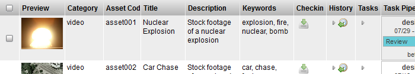
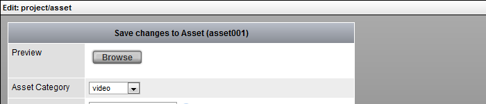

Views in TACTIC are the main widgets used to display the items in a project. The display of these items vary depending on the view. Views are typically accessed through the sidebar. TACTIC tools and widgets such as tables, dashboards, edit panels and custom HTML interfaces, allow the end user to interact and alter the viewing experience.
TACTIC Views are extremely customizable and can be configured to meet the specific needs and workflow of the end user. Views also provide quick navigational options such as Search and Grouping, which can be embedded in various layout styles within a panel interface such as a Dashboard.
Below are some examples of the more common widgets used for views in TACTIC.
Table

Dashboard

Edit Panel

Calendar